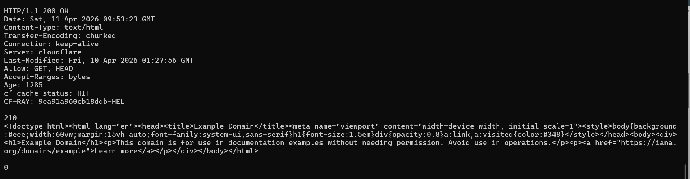
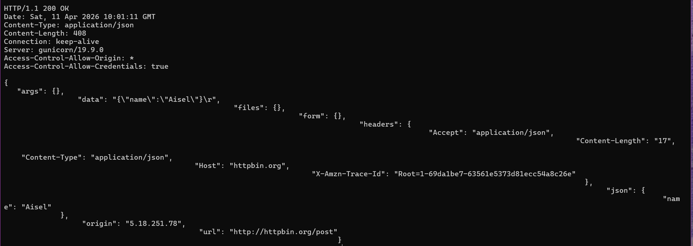
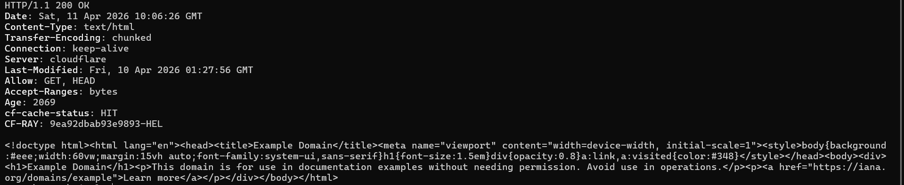
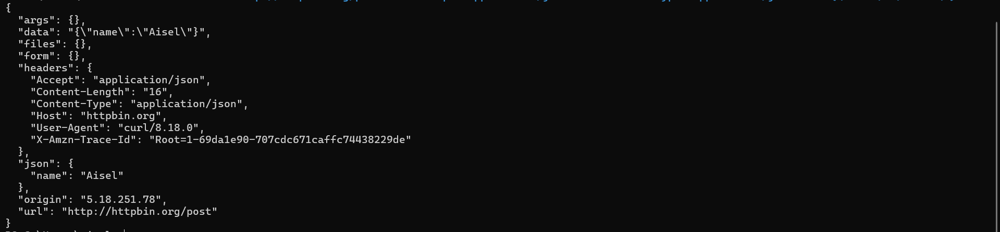
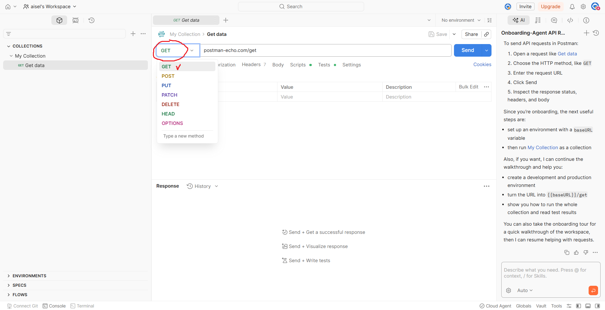
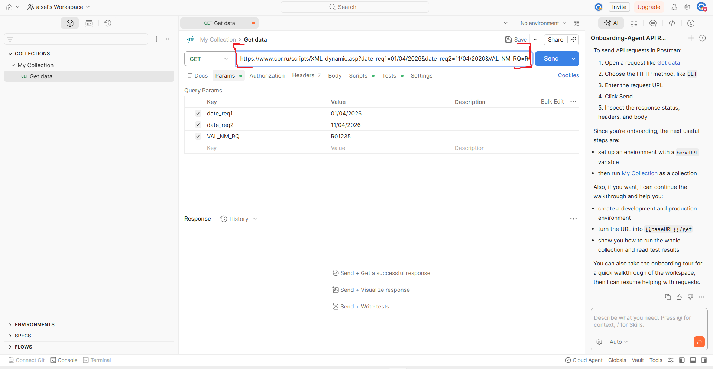

Протокол HTTP. Клиент-серверное взаимодействие
Agalarova Aisel
GET-запрос через Telnet
Для отправки GET-запроса я использовала тестовый сайт example.com, доступный по протоколу HTTP на порту 80.
Подключение к серверу:
telnet example.com 80
После установки соединения в терминале я ввела запрос:
GET / HTTP/1.1
Host: example.com
В первой строке указаны метод GET, путь / и версия протокола HTTP/1.1. Заголовок Host: example.com и сообщает серверу, к какому хосту обращается клиент. Пустая строка после заголовков показывает серверу, что запрос завершён.

В ответ сервер вернул сообщение со статусомHTTP/1.1 200 OK, заголовки ответа и код страницы. Запрос был успешно обработан и сервер передал клиенту содержимое главной страницы.
POST-запрос через Telnet
Для POST-запроса я использовала httpbin.org, который позволяет отправлять HTTP-запросы и получать в ответе сведения о них.
Подключение к серверу:
telnet httpbin.org 80
После подключения в терминале я ввела запрос:
POST /post HTTP/1.1
Host: httpbin.org
Accept: application/json
Content-Type: application/json
Content-Length: 16
{"name":"Aisel"}
В стартовой строке указаны метод POST, путь /post и версия протокола HTTP/1.1. Заголовок Host задаёт адрес сервера. Заголовок Accept: application/json сообщает, что клиент ожидает получить ответ в формате JSON. Заголовок Content-Type: application/json показывает, что тело запроса передаётся в формате JSON. Заголовок Content-Length: 16 указывает длину тела запроса в байтах. После пустой строки передаётся само тело запроса.

Сервер вернул JSON-ответ, в котором были переданные мной данные. POST-запрос был успешно отправлен и обработан.GET-запрос через cURL
Для отправки GET-запроса с помощью cURL я использовала:
curl.exe -i http://example.com
Флаг -i выводит тело ответа, HTTP-заголовки и строку статуса.

В результате выполнения команды был получен ответ со статусомHTTP/1.1 200 OK, заголовками и HTML-кодом страницы example.com.
GET-запрос успешно выполнен с помощью cURL.
POST-запрос через cURL
Для отправки POST-запроса с помощью cURL я использовала:
curl.exe -X POST "http://httpbin.org/post" -H "Accept: application/json" -H "Content-Type: application/json" -d '{\"name\":\"Aisel\"}'
Параметр -X POST явно задаёт метод POST. Параметр -H "Accept: application/json" сообщает серверу, что клиент ожидает JSON-ответ. Параметр -H "Content-Type: application/json" указывает тип передаваемых данных. Параметр -d передаёт тело запроса.

В ответ сервер вернул JSON-документ, в котором полеjson содержало отправленные мной данные. POST-запрос был успешно выполнен.
GET-запрос к API Банка России через Postman
Для выполнения GET-запроса в я использовала веб-версию сервиса Postman.
В Postman сначала я выбрала метод GET:

Потом в адресную строку я вставила URL:
https://www.cbr.ru/scripts/XML_dynamic.asp?date_req1=01/04/2026&date_req2=11/04/2026&VAL_NM_RQ=R01235
Адрес состоит из базового пути https://www.cbr.ru/scripts/XML_dynamic.asp , который указывает на сервис Банка России, который возвращает динамику курса валюты за определенный период; параметр date_req1=01/04/2026 задаёт начальную дату периода (1 апреля 2026 года); параметр date_req2=11/04/2026 задаёт конечную дату периода (11 апреля 2026 года); параметр VAL_NM_RQ=R01235 задаёт код валюты (доллар США).
Дальше я нажала на Send и получила ответ:
<?xml version="1.0" encoding="windows-1251"?>
<ValCurs ID="R01235" DateRange1="01.04.2026" DateRange2="11.04.2026" name="Foreign Currency Market Dynamic">
<Record Date="01.04.2026" Id="R01235">
<Nominal>1</Nominal>
<Value>81,2504</Value>
<VunitRate>81,2504</VunitRate>
</Record>
<Record Date="02.04.2026" Id="R01235">
<Nominal>1</Nominal>
<Value>80,6234</Value>
<VunitRate>80,6234</VunitRate>
</Record>
<Record Date="03.04.2026" Id="R01235">
<Nominal>1</Nominal>
<Value>80,3332</Value>
<VunitRate>80,3332</VunitRate>
</Record>
<Record Date="04.04.2026" Id="R01235">
<Nominal>1</Nominal>
<Value>79,7293</Value>
<VunitRate>79,7293</VunitRate>
</Record>
<Record Date="07.04.2026" Id="R01235">
<Nominal>1</Nominal>
<Value>78,7277</Value>
<VunitRate>78,7277</VunitRate>
</Record>
<Record Date="08.04.2026" Id="R01235">
<Nominal>1</Nominal>
<Value>78,7496</Value>
<VunitRate>78,7496</VunitRate>
</Record>
<Record Date="09.04.2026" Id="R01235">
<Nominal>1</Nominal>
<Value>78,3043</Value>
<VunitRate>78,3043</VunitRate>
</Record>
<Record Date="10.04.2026" Id="R01235">
<Nominal>1</Nominal>
<Value>77,8366</Value>
<VunitRate>77,8366</VunitRate>
</Record>
<Record Date="11.04.2026" Id="R01235">
<Nominal>1</Nominal>
<Value>76,9724</Value>
<VunitRate>76,9724</VunitRate>
</Record>
</ValCurs>
В ответе содержатся элементы <Record> для отдельных дат; элемент <Nominal>,который показывает номинал валюты; элемент <Value>,который показывает официальный курс на соответствующую дату; элемент <VunitRate>, который содержит значение курса за одну единицу валюты.